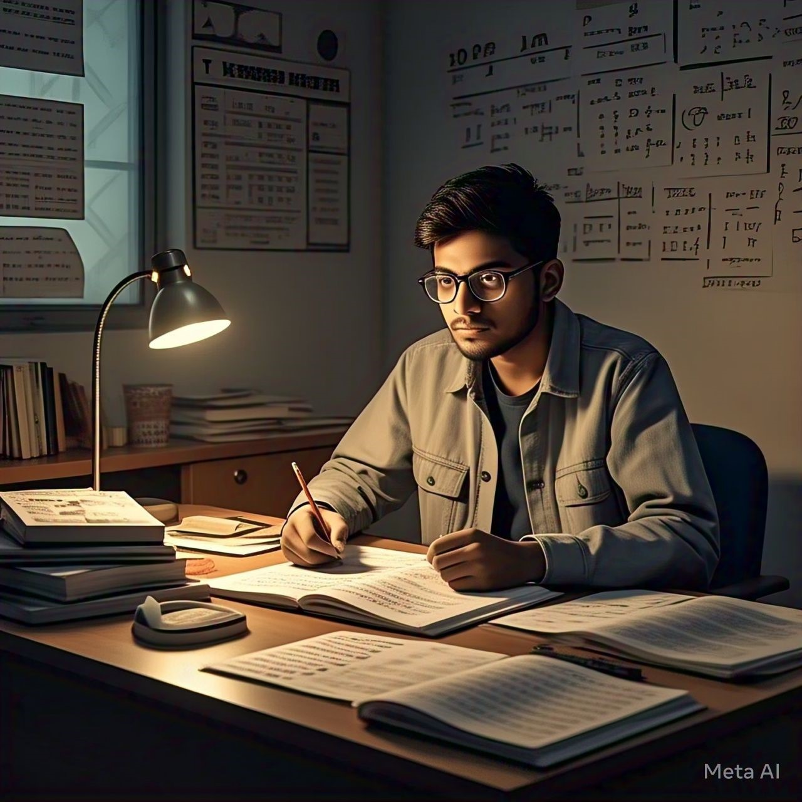

Who We Are
PrepRaazi is an expert-engineered framework bridging objective speed and conventional depth. We integrate ESE Prelims clarity with Mains writing rigor to build the core instincts needed to crack any civl engineering exam.
🚀 Upcoming Test : ESE pre (civil) Test-4 [Pert & CPM + Steel] : 19/07/2026, 4:30 PM. Check the ESE pre (Civil) portal!
An integrated Pre + Mains ecosystem blending ESE Civil and General Studies. Our strong technical foundation prepares you to confidently crack GATE, SSC JE, RRB JE, and State AE/JE exams.
PrepRaazi is an expert-engineered framework bridging objective speed and conventional depth. We integrate ESE Prelims clarity with Mains writing rigor to build the core instincts needed to crack any civl engineering exam.

Our integrated Pre + Mains curriculum serves as the ultimate master key for all major premier examinations:
🚀 360-Degree Integrated Approach – Complete mastery of objective scanning and deep, step-by-step conventional derivation skills.
📊 Native Direct Submission Modules – Upload conventional answer sheets right on the site for detailed evaluation loops without changing windows.
💡 Comprehensive General Studies Focus – Master non-technical engineering aptitudes, ethics, and project management vital for competitive edge.
📈 Real-Time Tracking & Analysis – Practice with targeted tests where your instant report cards sync directly to the master instructor dashboard.